256
使用码数
深圳 R23 · 数据发版报告
本页面由本次冻结数据、最终编码统计和交付清单生成。
K256本版按与RVQ-H5相同的真实宏节点重新拟合并编码，消除起始、中间和末端细碎动作；RVQ-H5保留v3基于同一80,475条数据拟合的码本与标签，并再次独立核对。最终K256有 80,475 条、RVQ-H5有 80,475 条轨迹；K256/RVQ样本分别为 5,167,420 / 5,167,420。离线重建误差不代表策略成功率。
| 属性 | K256 | Pointing + Object + RVQ-H5 |
|---|---|---|
| 表示对象 | 相邻保留宏节点之间的三维局部动作 | Object、Pointing 与三层 RVQ；预测未来五个绝对局部位姿 |
| 观测采样 | 与RVQ-H5完全一致的真实宏观测节点，包含原始首末帧 | 从原始帧中选择连续宏动作保留节点，保留真实时间戳 |
| 动作维度 / 坐标系 | 前向m、左向m、逆时针yaw弧度；当前机身局部坐标 | 五点均相对同一个当前观测：前向m、左向m、逆时针yaw弧度 |
| 预测 / 执行 | 预测并执行1个宏动作目标，完成后重新观测；时间戳间隔可变 | 预测5个未来真实节点；仅执行第一点 decoded[0]，随后重新观测和重规划 |
| 码本来源 | /cpfs-normal/xuyuan/data-workspace/shenzhen-r23-qc-k256-rvq-h5-20261104-v4-macro-k256/k256/codebook.npz SHA256 685a9d717360a3ab6776657dd1920fd10efddcce393a94131f58b90c848b9c9d 均值/尺度归一化 | /cpfs-normal/xuyuan/data-workspace/shenzhen-r23-qc-k256-rvq-h5-20261104-v4-macro-k256/deps/codebook.npz SHA256 a77f0577ac9b63b9d652f5482b250a9c434fabcb2184e8ec44a291fde94b8d3f 本批冻结保留train集从头拟合；解码为物理单位，scale全1 |
| 拟合 / 评测范围 | train 80,475 条，每条轨迹等权；本批没有eval/probe，指标为训练数据离线重建误差。manifest SHA256 9ea51004ba9908db8663036916f4bfc4f4aa2ee048c250702af9f313d91c5896 | 保持v3在相同80,475条保留train轨迹上从头拟合的3层×256码和已验证beam结果；本版码本与标签SHA均未变。STOP和无效padding不参与原拟合；无eval/probe，指标为训练数据离线重建误差 |
| 运动 ID / 类型 | 1–256，uint16 | 每层0–255整数ID；3层码本形状 [3, 256, 15] |
| STOP | ID 0，uint16独立终止码 | 三层全0（[0,0,0]），Pointing <apos_1299> 同步终止 |
| 最终轨迹 / 样本 | 80,475 / 5,167,420 | 80,475 / 5,167,420 |
| 读取器 | /cpfs-normal/xuyuan/data-workspace/shenzhen-r23-qc-k256-rvq-h5-20261104-v4-macro-k256/reader.py | /cpfs-normal/xuyuan/data-workspace/shenzhen-r23-qc-k256-rvq-h5-20261104-v4-macro-k256/reader.py |
| 参数 | K256 | RVQ-H5 |
|---|---|---|
| 拟合轨迹数 | 80,475 | 80,475 |
| 非STOP拟合样本 | 5,086,945 | 5,086,945 |
| 随机种子 | 20261105 | 20261105 |
| 权重 | each train trajectory sums to 1; no length buckets; all real macro-node deltas; each codeword must exceed 10cm OR 10deg | each retained train trajectory contributes total weight 1; all its non-STOP real macro observation nodes included |
| 归一化 | weighted mean and weighted population std of forward_m,left_m,ccw_yaw_rad; std floor1e-6 | fit uses masked population std, floor1e-4; codebooks stored in physical m,m,rad; decoder scale=15 ones |
| 拟合目标 | 归一化3维动作的轨迹等权平方误差 | sequential residual weighted masked squared error in normalized pose space; first waypoint yaw weight4; inference uses actual beam objective |
| padding / STOP | 仅真实宏节点间运动动作，STOP排除 | invalid future padding excluded from assignments, centroids and normalization; STOP excluded |
| 算法 | K-means++初始化，最多50轮Lloyd | 3层残差K-means，每层最多50轮；从头随机初始化，无旧码本输入 |
| 参数文件 | /cpfs-normal/xuyuan/data-workspace/shenzhen-r23-qc-k256-rvq-h5-20261104-v4-macro-k256/k256/CODEBOOK.json | /cpfs-normal/xuyuan/data-workspace/shenzhen-r23-qc-k256-rvq-h5-20261104-v4-macro-k256/rvq/CODEBOOK.json |
两分支使用同一冻结保留集。K256本版在合并后的宏动作上从头拟合，并约束全部运动码不细碎；RVQ-H5保持v3同批数据拟合结果。每条轨迹拟合总权重为1。RVQ拟合的归一化与beam推理目标分别记录，解码继续使用物理单位码本求和。参数、训练清单摘要及版本对照可从数据与训练入口下载。
只比较新旧版本均有完整监督的相同轨迹；分母为80,475条。QC集合未变，K256码本和运动标签重新生成。对照版为v3：K256使用原始相邻帧动作；本版K256使用与RVQ-H5相同的宏节点。RVQ-H5的码本与全部标签保持v3不变。各指标均为先逐轨迹求值，再对轨迹等权汇总；误差越小越好。
| 编码 | 指标 | 轨迹n | 旧版均值 | 本版均值 | 旧版P95 | 本版P95 |
|---|---|---|---|---|---|---|
| k256 | 全程开环FDE (m) | 80,475 | 0.32607 | 0.59070 | 1.07084 | 1.95059 |
| k256 | 首个宏目标平移误差 (m) | 80,475 | 0.00352 | 0.00564 | 0.00459 | 0.00779 |
| k256 | 首个宏目标航向误差 (deg) | 80,475 | 0.05918 | 0.11535 | 0.10308 | 0.20156 |
| rvq | 全程开环FDE (m) | 80,475 | 0.30158 | 0.30158 | 0.95213 | 0.95213 |
| rvq | 首个宏目标平移误差 (m) | 80,475 | 0.00750 | 0.00750 | 0.01114 | 0.01114 |
| rvq | 首个宏目标航向误差 (deg) | 80,475 | 0.06637 | 0.06637 | 0.11445 | 0.11445 |
本版K256的运动跨度已由原始相邻帧改为真实宏节点；码本按宏动作重新拟合，局部单步误差不能与v3的原始单帧误差混用分母。全程开环FDE在相同完整轨迹上直接对照。RVQ-H5保持v3结果不变。
K256拟合参数 · RVQ拟合参数 · 拟合集验证 · 新旧码本与误差对照
细碎定义为平移≤10cm且绝对转角≤10°，STOP排除。平移足够大的直行可含很小转角，转向足够大的原地动作可含很小位移。两种编码保留相同真实首末帧，未通过删除终点消除尾段；所有跳过帧均不进入current/history。质检全部轨迹、全部运动码及末端最后一个/三个运动动作。
| 范围 | 检查数 | 细碎残留数 |
|---|---|---|
| 原始GT运动边 | 6,788,222 | 1,738,833 |
| 合并后GT运动边 | 5,086,945 | 0 |
| K256解码运动边 | 5,086,945 | 0 |
| 原始最后一个运动动作 | 80,475 | 56,380 |
| 合并后最后一个运动动作（GT及解码） | 80,475 | 0 |
| 合并后开头运动动作 | 80,475 | 0 |
| 合并后最后3个运动动作 | 241,425 | 0 |
| 256个运动码字 | 256 | 0 |
解码检查使用同一10cm/10°门槛；RVQ原解码门槛仍为5cm/5°。码本训练若均值产生细碎码，使用该簇中最接近均值的真实有效动作替换，不虚构位移。下载全量细碎与末端验证
按分片固定顺序选前三条原始末边细碎的已交付轨迹。A为合并后的倒数第二个保留节点，B为被跳过的原始倒数第二帧，C为原始终点且仍输出STOP0。图像均为源视频真实帧；地图以米为单位、等比例，另标K256解码目标。样例用于解释合并，不外推异常率。
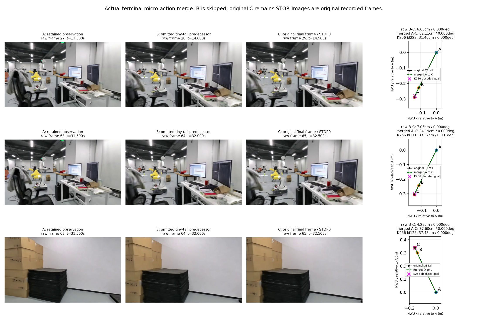
| 数据组 | split | 完整episode_id | A / B / C原始帧号 | A处运动码 | C处STOP |
|---|---|---|---|---|---|
| shenzhen_office_r23_k3_bin1_20261028 | train | shenzhen_office__shenzhen_office_v9_semantic__semantic_56f9cac5 | 27 / 28 / 29 | 222 | 0 |
| shenzhen_office_r23_k3_bin1_20261028 | train | shenzhen_office__shenzhen_office_v9_semantic__semantic_9a1bf389 | 63 / 64 / 65 | 171 | 0 |
| shenzhen_office_r23_k3_bin1_20261028 | train | shenzhen_office__shenzhen_office_v9_semantic__semantic_f2382d6a | 63 / 64 / 65 | 125 | 0 |
码频率、熵、有效码数和前10占比仅统计 5,086,945 个运动码（ID 1–256）；STOP 另计 80,475 个。
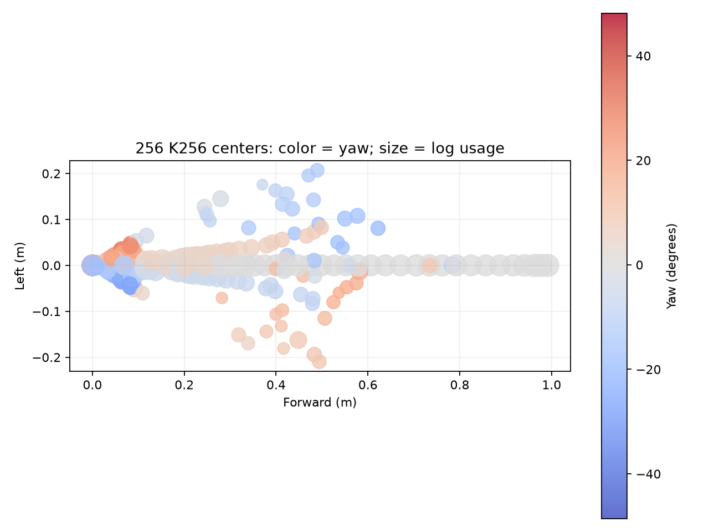
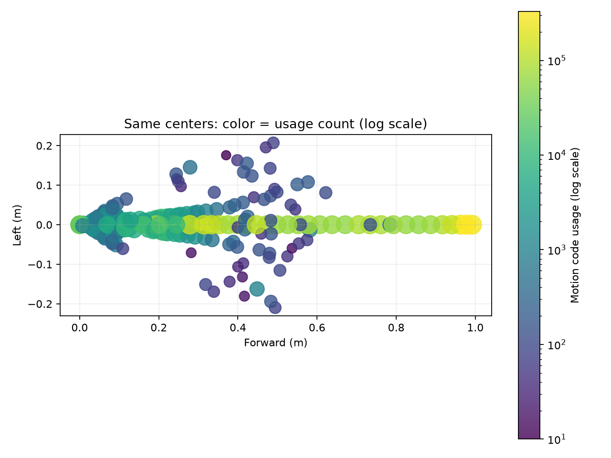
K256每码频率与解码位姿：下载 k256_code_usage.csv · 下载 rvq_layer_code_usage.csv · 下载 rvq_complete_triples.csv
| K256动作类别（由码字阈值分类） | 计数 |
|---|---|
| STOP | 80,475 |
| turn | 75,344 |
| low_displacement | 15,062 |
| straight | 4,154,191 |
| in_place_turn | 842,348 |
阈值：STOP: code==0；in_place_turn: translation<0.02m and abs(yaw)>=10deg；low_displacement: translation<0.05m after in-place-turn test；turn: abs(yaw)>=10deg after preceding tests；straight: otherwise
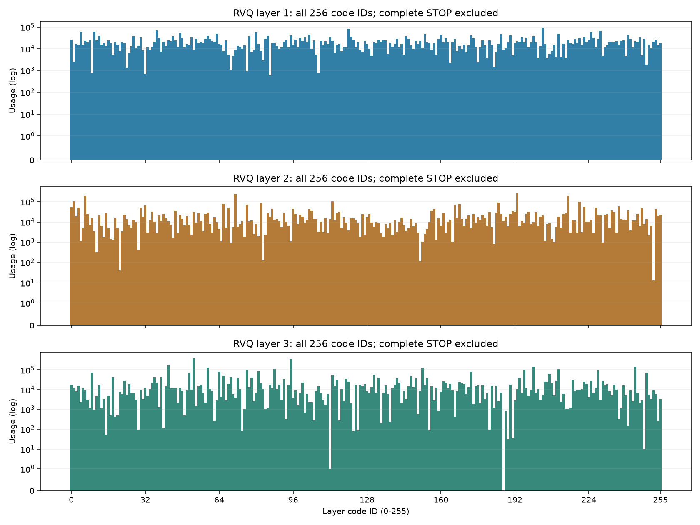
每层和完整三元组均统计 5,086,945 个非STOP节点；完整000终止节点 80,475 个另计。单层0可以是普通运动码。
| 层 | Token数 | 已用码数 | 有效码数 | 熵(bit) | 前10码占比 |
|---|---|---|---|---|---|
| L1 | 5,086,945 | 256 | 205.87 | 7.686 | 12.69% |
| L2 | 5,086,945 | 256 | 132.29 | 7.048 | 28.39% |
| L3 | 5,086,945 | 255 | 102.29 | 6.677 | 34.07% |
三层单码边际统计的分母各为 5,086,945 个非STOP宏节点；边际统计不等于完整三元组频率。完整三元组：311,967 种 / 5,086,945 个，前10种占 2.61%。
| 完整码三元组 (L0,L1,L2) | 频数 |
|---|---|
| (10, 193, 53) | 20,933 |
| (204, 71, 53) | 16,779 |
| (63, 193, 53) | 13,449 |
| (204, 6, 95) | 12,908 |
| (204, 71, 95) | 12,739 |
| (120, 193, 53) | 11,671 |
| (229, 71, 53) | 11,134 |
| (229, 71, 95) | 11,039 |
| (225, 193, 95) | 10,998 |
| (10, 71, 53) | 10,956 |
下载 k256_code_usage.csv · 下载 rvq_layer_code_usage.csv · 下载 rvq_complete_triples.csv
每行只对应一个误差量和一个单位。K256单步按全部相邻宏节点动作加权；另列先逐轨迹求均值再按轨迹统计。局部H5对共同真实未来节点比较，padding剔除；最后有效目标可少于第5点。全程开环从起点连续解码，不用GT中途校正，二者分列。
| 分支/加权方式 | 误差量 | 单位 | n | 均值 | P50 | P95 |
|---|---|---|---|---|---|---|
| K256 · 按动作加权 | 宏节点单步平移误差 | m | 5,086,945 | 0.00544 | 0.00434 | 0.01381 |
| K256 · 按动作加权 | 宏节点单步航向误差 | deg | 5,086,945 | 0.106 | 0.000 | 0.573 |
| K256 · 按轨迹加权 | 宏节点单步平移误差（轨迹均值） | m | 80,475 | 0.00564 | 0.00541 | 0.00779 |
| K256 · 按轨迹加权 | 宏节点单步航向误差（轨迹均值） | deg | 80,475 | 0.115 | 0.105 | 0.202 |
| K256 | 首个宏目标平移误差 | m | 80,475 | 0.00564 | 0.00541 | 0.00779 |
| K256 | 首个宏目标航向误差 | deg | 80,475 | 0.115 | 0.105 | 0.202 |
| K256 | 局部H5平均位置误差 | m | 80,475 | 0.01136 | 0.01094 | 0.01594 |
| K256 | 局部H5最后有效目标位置误差 | m | 80,475 | 0.01683 | 0.01617 | 0.02410 |
| K256 | 局部H5航向误差 | deg | 80,475 | 0.237 | 0.218 | 0.428 |
| K256 | 全程开环ADE | m | 80,475 | 0.29646 | 0.18524 | 0.94961 |
| K256 | 全程开环FDE | m | 80,475 | 0.59070 | 0.35334 | 1.95059 |
| K256 | 全程开环终点航向漂移 | deg | 80,475 | 1.935 | 1.531 | 5.092 |
| RVQ-H5 | 首个执行动作平移误差 | m | 80,475 | 0.00750 | 0.00720 | 0.01114 |
| RVQ-H5 | 首个执行动作航向误差 | deg | 80,475 | 0.066 | 0.062 | 0.114 |
| RVQ-H5 | 局部H5平均位置误差 | m | 80,475 | 0.01154 | 0.01122 | 0.01664 |
| RVQ-H5 | 局部H5最后有效目标位置误差 | m | 80,475 | 0.01578 | 0.01522 | 0.02357 |
| RVQ-H5 | 局部H5航向误差 | deg | 80,475 | 0.508 | 0.472 | 0.869 |
| RVQ-H5 | 全程开环ADE | m | 80,475 | 0.15963 | 0.10695 | 0.46748 |
| RVQ-H5 | 全程开环FDE | m | 80,475 | 0.30158 | 0.18633 | 0.95213 |
| RVQ-H5 | 全程开环终点航向漂移 | deg | 80,475 | 0.921 | 0.713 | 2.473 |
路线层按配对轨迹路径长度三分位划分；只报告实际观测到的路程区间，不补造路线长度分位数。
| 路线层 | 轨迹数 | 实际路程范围 (m) | 分支 | 误差量 | 单位 | n | 均值 | P50 | P95 |
|---|---|---|---|---|---|---|---|---|---|
| short | 26,825 | 3.00–17.36 | K256 | 路线终点位置误差 | m | 26,825 | 0.19915 | 0.14445 | 0.55970 |
| short | 26,825 | 3.00–17.36 | K256 | 终点航向误差 | deg | 26,825 | 1.62192 | 1.27480 | 4.25849 |
| short | 26,825 | 3.00–17.36 | RVQ-H5 | 路线终点位置误差 | m | 26,825 | 0.11705 | 0.09150 | 0.30250 |
| short | 26,825 | 3.00–17.36 | RVQ-H5 | 终点航向误差 | deg | 26,825 | 0.74630 | 0.56864 | 2.03617 |
| medium | 26,825 | 17.36–35.71 | K256 | 路线终点位置误差 | m | 26,825 | 0.50564 | 0.38695 | 1.34442 |
| medium | 26,825 | 17.36–35.71 | K256 | 终点航向误差 | deg | 26,825 | 1.94632 | 1.57059 | 5.02704 |
| medium | 26,825 | 17.36–35.71 | RVQ-H5 | 路线终点位置误差 | m | 26,825 | 0.26548 | 0.20252 | 0.69627 |
| medium | 26,825 | 17.36–35.71 | RVQ-H5 | 终点航向误差 | deg | 26,825 | 0.94158 | 0.74244 | 2.48317 |
| long | 26,825 | 35.71–96.65 | K256 | 路线终点位置误差 | m | 26,825 | 1.06730 | 0.81214 | 2.85028 |
| long | 26,825 | 35.71–96.65 | K256 | 终点航向误差 | deg | 26,825 | 2.23735 | 1.81789 | 5.69978 |
| long | 26,825 | 35.71–96.65 | RVQ-H5 | 路线终点位置误差 | m | 26,825 | 0.52221 | 0.39912 | 1.38011 |
| long | 26,825 | 35.71–96.65 | RVQ-H5 | 终点航向误差 | deg | 26,825 | 1.07435 | 0.86491 | 2.77851 |
共同可比轨迹 80,475 条。窗口按1至5个未来真实宏节点逐层统计；同一路线的连续窗口重叠，padding与无效尾窗排除，每轨贡献节点数可变。上表按有效窗口加权，下表先求每轨平均再按轨迹加权。同一窗口同时报告实际路径跨度米数、冻结时间戳跨度秒数及两分支位置/航向误差。
| 未来节点跨度 | 分支 | 窗口n | 跨度均值m | 跨度P50m | 跨度P95m | 时长均值s | 时长P50s | 时长P95s | 位置均值m | 位置P50m | 位置P95m | 航向均值° | 航向P50° | 航向P95° |
|---|---|---|---|---|---|---|---|---|---|---|---|---|---|---|
| 第1个未来宏节点 | K256 | 5,086,945 | 0.465 | 0.375 | 0.985 | 0.667 | 0.500 | 1.500 | 0.00544 | 0.00434 | 0.01381 | 0.106 | 0.000 | 0.573 |
| 第1个未来宏节点 | RVQ-H5 | 5,086,945 | 0.465 | 0.375 | 0.985 | 0.667 | 0.500 | 1.500 | 0.00720 | 0.00405 | 0.02461 | 0.063 | 0.009 | 0.324 |
| 第2个未来宏节点 | K256 | 5,006,470 | 0.941 | 0.770 | 1.968 | 1.321 | 1.000 | 2.500 | 0.00839 | 0.00665 | 0.02217 | 0.169 | 0.001 | 0.867 |
| 第2个未来宏节点 | RVQ-H5 | 5,006,470 | 0.941 | 0.770 | 1.968 | 1.321 | 1.000 | 2.500 | 0.00875 | 0.00500 | 0.02951 | 0.367 | 0.027 | 1.840 |
| 第3个未来宏节点 | K256 | 4,925,995 | 1.425 | 1.215 | 2.949 | 1.972 | 1.500 | 3.000 | 0.01121 | 0.00908 | 0.02815 | 0.227 | 0.004 | 1.074 |
| 第3个未来宏节点 | RVQ-H5 | 4,925,995 | 1.425 | 1.215 | 2.949 | 1.972 | 1.500 | 3.000 | 0.01063 | 0.00605 | 0.03665 | 0.500 | 0.067 | 2.245 |
| 第4个未来宏节点 | K256 | 4,845,520 | 1.915 | 1.643 | 3.928 | 2.623 | 2.500 | 4.000 | 0.01396 | 0.01147 | 0.03365 | 0.283 | 0.008 | 1.234 |
| 第4个未来宏节点 | RVQ-H5 | 4,845,520 | 1.915 | 1.643 | 3.928 | 2.623 | 2.500 | 4.000 | 0.01252 | 0.00738 | 0.04217 | 0.640 | 0.163 | 2.643 |
| 第5个未来宏节点 | K256 | 4,765,045 | 2.410 | 2.007 | 4.904 | 3.273 | 3.500 | 4.500 | 0.01678 | 0.01395 | 0.03970 | 0.337 | 0.059 | 1.367 |
| 第5个未来宏节点 | RVQ-H5 | 4,765,045 | 2.410 | 2.007 | 4.904 | 3.273 | 3.500 | 4.500 | 0.01590 | 0.00858 | 0.05540 | 0.867 | 0.265 | 3.542 |
| 未来节点跨度 | 分支 | 轨迹n | 轨迹均值误差m | P50m | P95m | 航向均值° | P50° | P95° |
|---|---|---|---|---|---|---|---|---|
| 第1个未来宏节点 | K256 | 80,475 | 0.00564 | 0.00541 | 0.00779 | 0.115 | 0.105 | 0.202 |
| 第1个未来宏节点 | RVQ-H5 | 80,475 | 0.00750 | 0.00720 | 0.01114 | 0.066 | 0.062 | 0.114 |
| 第2个未来宏节点 | K256 | 80,475 | 0.00864 | 0.00831 | 0.01196 | 0.183 | 0.167 | 0.328 |
| 第2个未来宏节点 | RVQ-H5 | 80,475 | 0.00925 | 0.00885 | 0.01395 | 0.389 | 0.361 | 0.691 |
| 第3个未来宏节点 | K256 | 80,475 | 0.01154 | 0.01109 | 0.01631 | 0.243 | 0.223 | 0.444 |
| 第3个未来宏节点 | RVQ-H5 | 80,475 | 0.01133 | 0.01084 | 0.01738 | 0.532 | 0.488 | 0.954 |
| 第4个未来宏节点 | K256 | 80,475 | 0.01440 | 0.01381 | 0.02072 | 0.301 | 0.276 | 0.556 |
| 第4个未来宏节点 | RVQ-H5 | 80,475 | 0.01330 | 0.01273 | 0.02030 | 0.681 | 0.628 | 1.199 |
| 第5个未来宏节点 | K256 | 80,475 | 0.01734 | 0.01656 | 0.02544 | 0.358 | 0.328 | 0.669 |
| 第5个未来宏节点 | RVQ-H5 | 80,475 | 0.01695 | 0.01616 | 0.02607 | 0.925 | 0.843 | 1.656 |
| 宏动作量 | 单位 | n | 均值 | P50 | P95 |
|---|---|---|---|---|---|
| GT宏动作平移距离 | m | 5,086,945 | 0.4653 | 0.3749 | 0.9850 |
| GT宏动作有符号转角 | deg | 5,086,945 | 0.0763 | 0.0000 | 21.9881 |
| GT宏动作时长 | s | 5,086,945 | 0.6672 | 0.5000 | 1.5000 |
GT微动作：平移≤10cm且绝对转角≤10°；解码微动作：平移≤5cm且转角≤5°，仅计有效目标、不计padding。合并前后分别统计真实GT相邻动作边与保留节点间动作边。
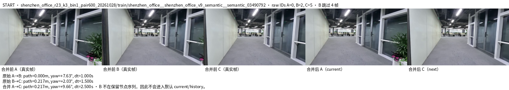
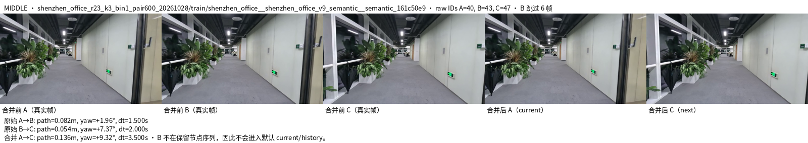
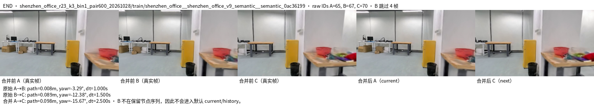
| 合并统计 | 动作/轨迹数 | 比较分母 | 比例/说明 |
|---|---|---|---|
| 保留集原始微动作 | 1,738,833 | 6,788,222 | 25.615% |
| 保留节点之间微动作 | 0 | 5,086,945 | 0.000% |
| 成功跳过的原始帧 | 1,701,277 | 6,868,697 | 实际合并 |
| 未解决GT轨迹 | 0 | 80,475 | 分母为QC保留轨迹 |
| 未解决RVQ轨迹 | 0 | 80,475 | 分母为QC保留轨迹 |
| Beam32重试节点 | 0 | 5,086,945 | 已验证编码记录；本版RVQ未改码 |
| 回退航向边 | 0 | 5,086,945 | 分母为宏动作边 |
全部QC保留原始帧 6,868,697；保留宏节点 5,167,420；beam32重试节点 0；解码后残留微动作节点 0。
核对 5,167,420 个节点，匹配 5,167,420 个；一致=true。STOP规则：all-zero RVQ node iff pointing token is
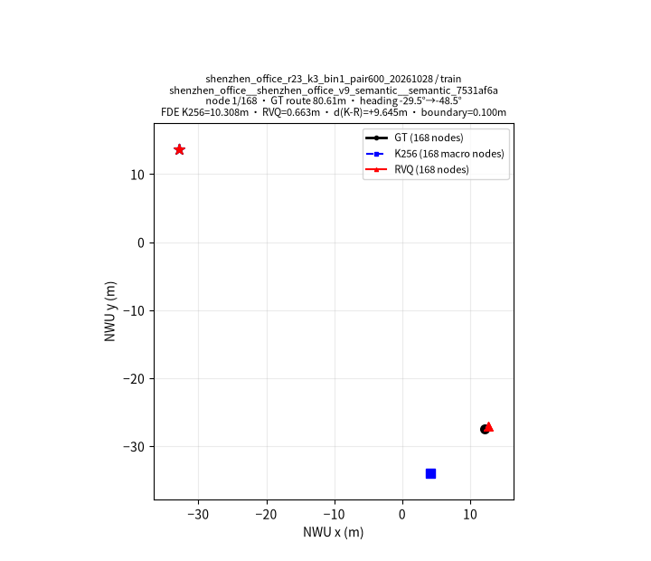
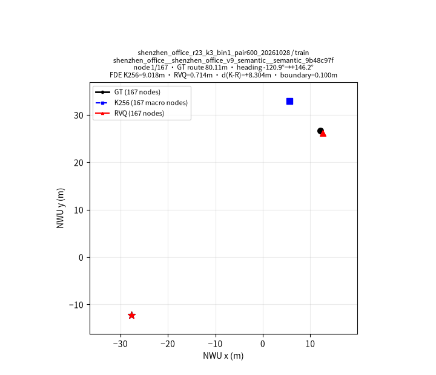
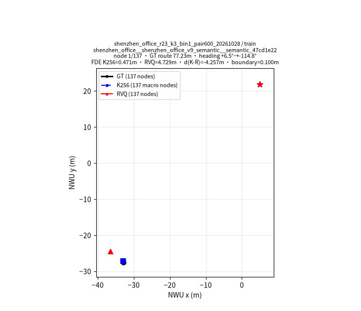
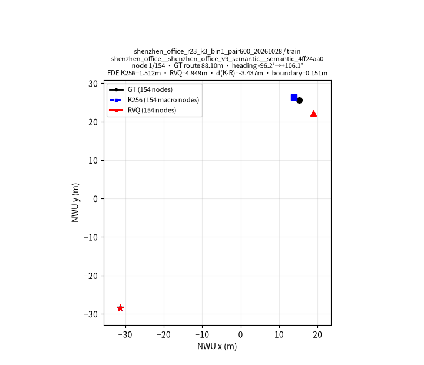
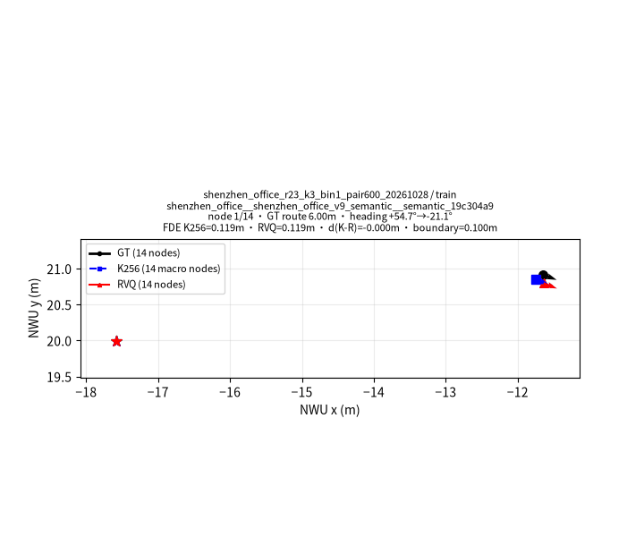
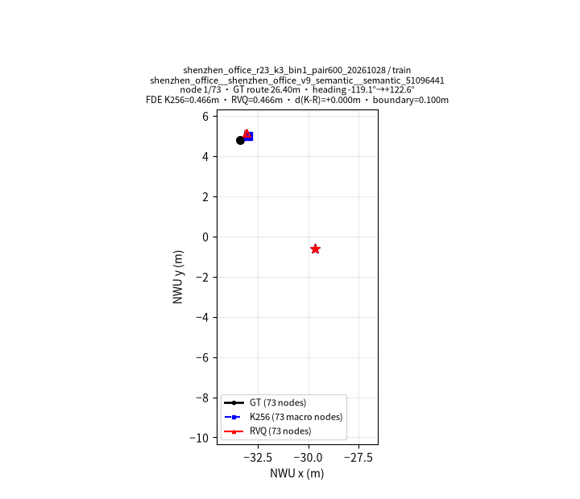
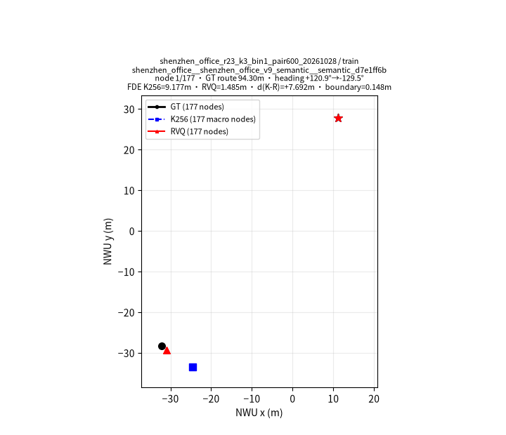
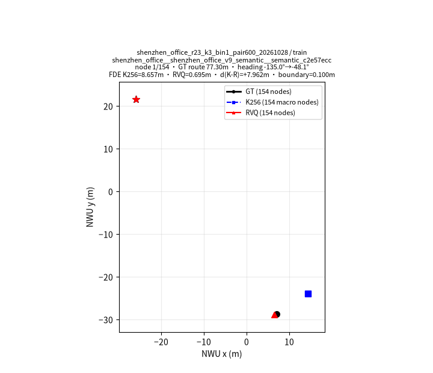
K256与RVQ-H5使用完全相同的真实宏观测节点，均合并跳过原始帧24.77%。K256每节点输出1个动作码，RVQ-H5每节点输出Object、Pointing及3层码共5个token。两者样本数均为5,167,420；RVQ输出标签25,837,100个，K256为5,167,420个。共同轨迹开环FDE均值为K256 0.591m、RVQ 0.302m；仅描述离线量化重建，不能推断策略或真机成功率。
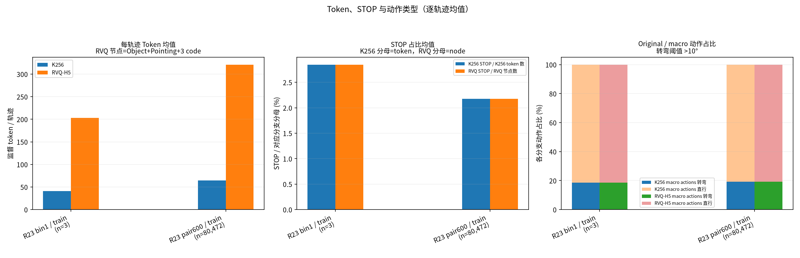
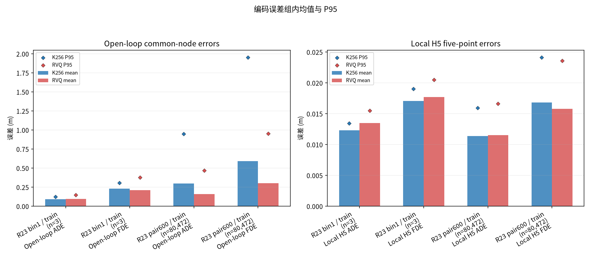
下载 k256_code_usage.csv · 下载 rvq_layer_code_usage.csv · 下载 rvq_complete_triples.csv · 下载编码统计 JSON · 下载误差统计 CSV · 数据与训练入口